Every pickup adds up
We track every donation — the food source, the amount, and the receiving organization. Here’s a look at that work in action across the community.
Operating in states across countries.
Top Donors
- 1 Peace Love & Little Donuts ~11,000 lbs
- 2 Carroll ISD ~9,000 lbs
- 3 Dan’s Bagels ~2,300 lbs
- 4 Parlor Donuts ~1,900 lbs
- 5 Ami Aggarwal Catering ~1,200 lbs
*All numbers verified by food pantry receipts.
*Estimated food value is calculated at $2.84 per pound, based on the EPA Office of Research and Development’s wasted food value estimate.
The partners powering our work
Businesses and schools whose consistent donations drive our impact.
- 1 Peace Love & Little Donuts ~11,000 lbs
- 2 Carroll ISD ~9,000 lbs
- 3 Dan’s Bagels ~2,300 lbs
- 4 Parlor Donuts ~1,900 lbs
- 5 Ami Aggarwal Catering ~1,200 lbs
What food rescue looks like
From pickups and deliveries to kitchens and community events — here’s our work in action.
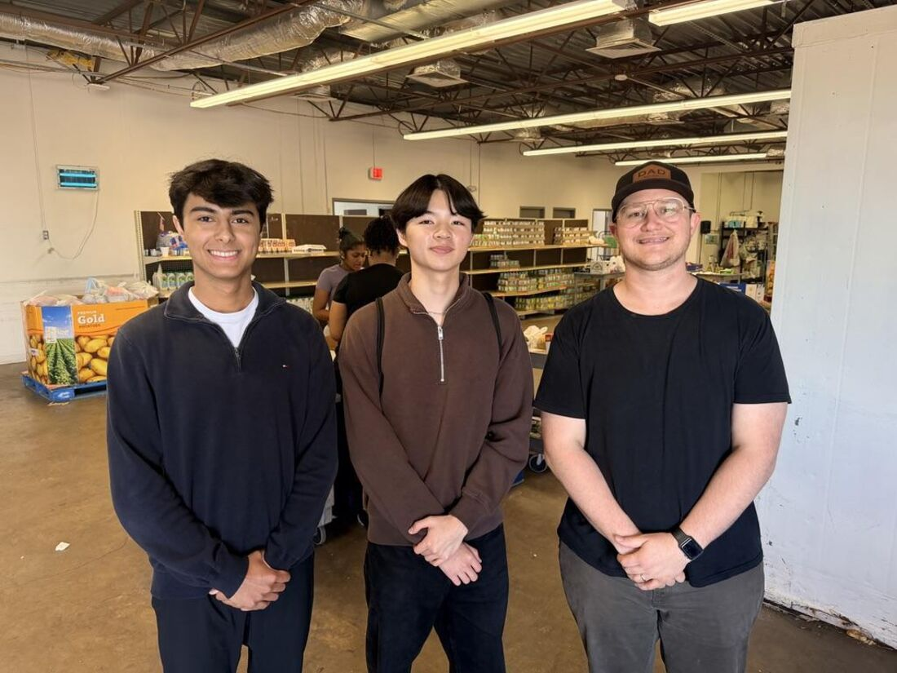
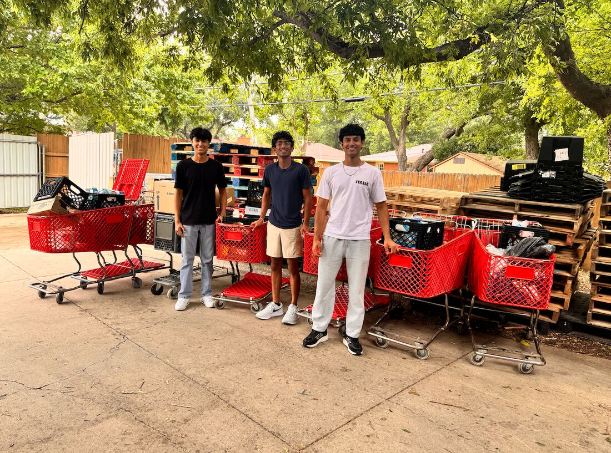
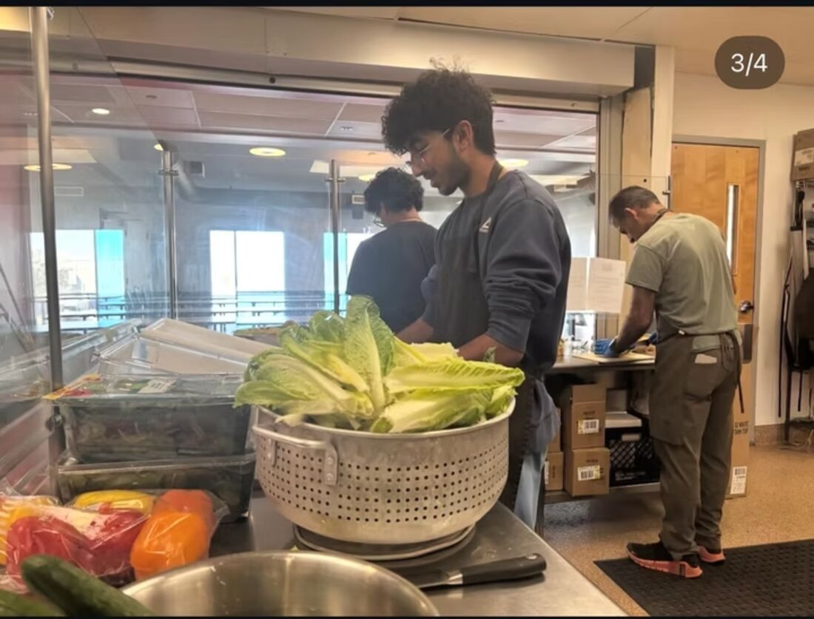
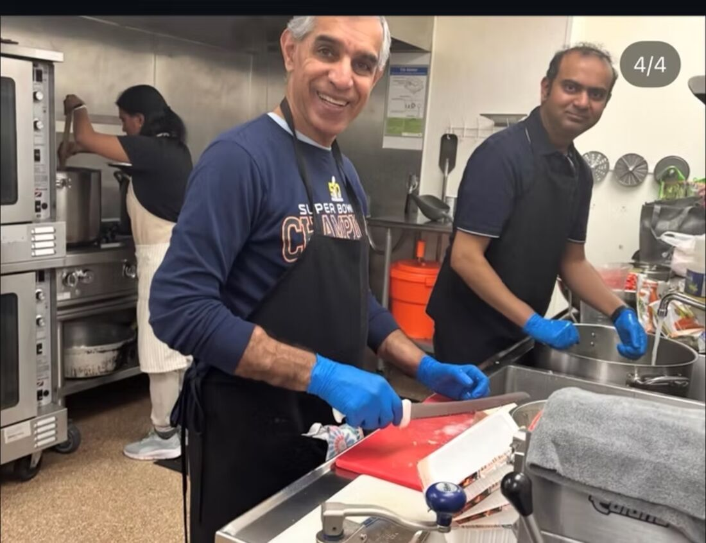
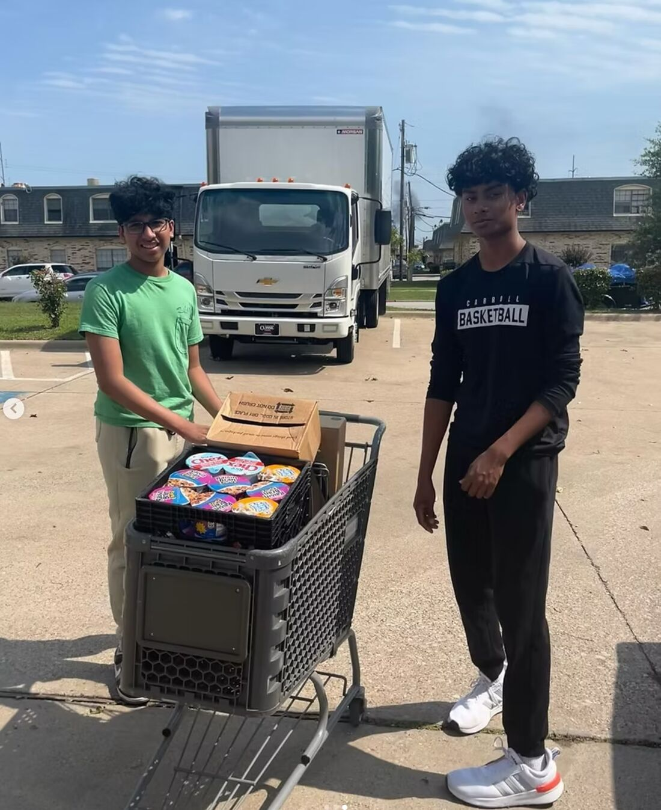
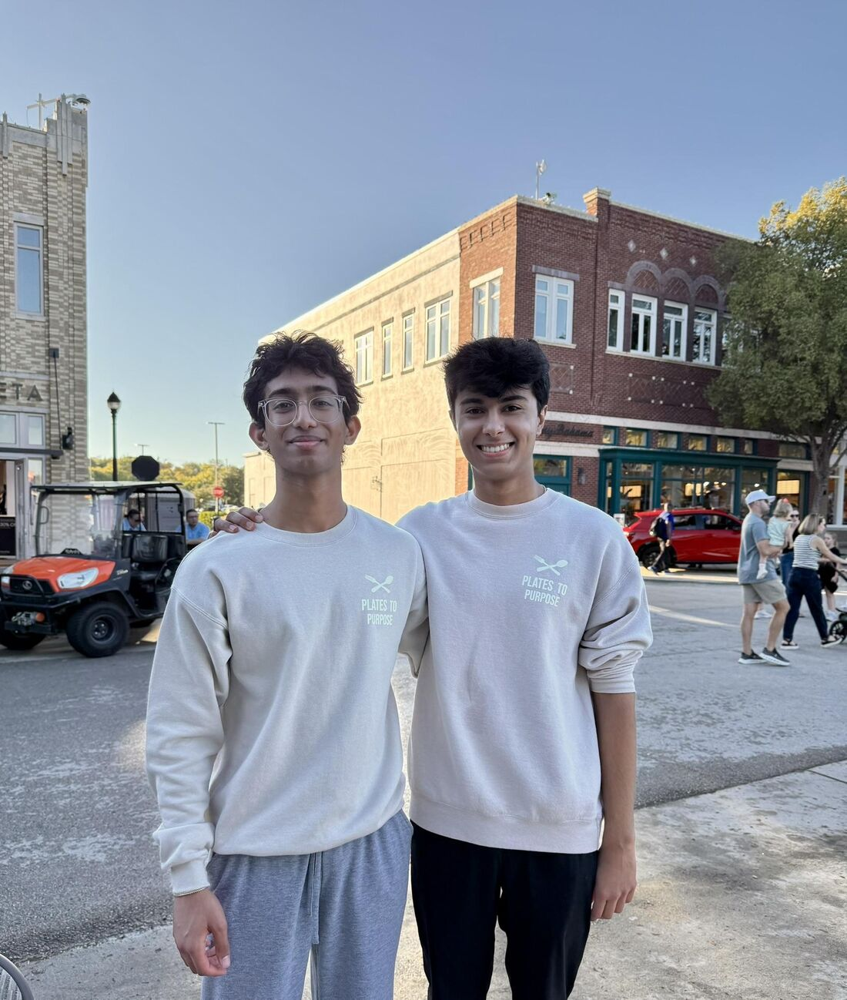
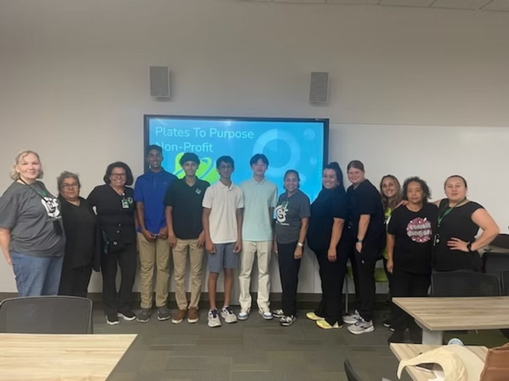
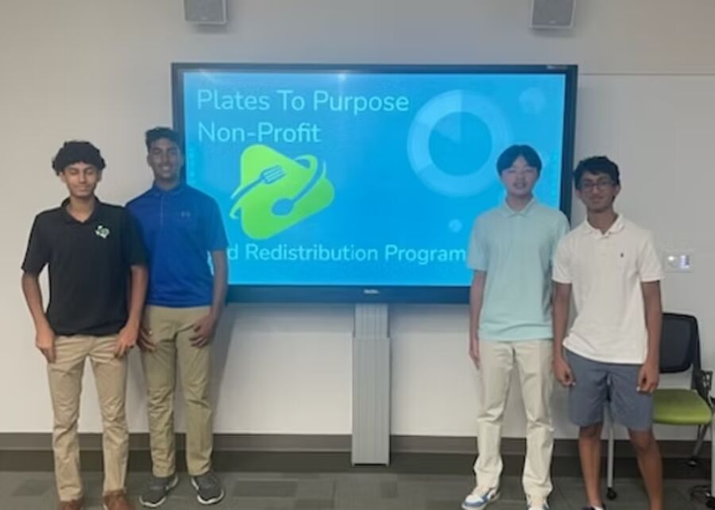
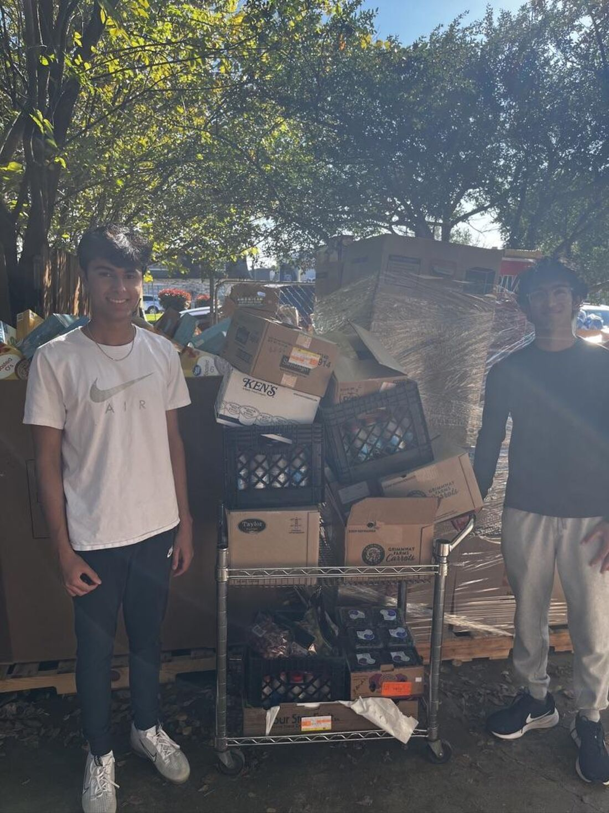
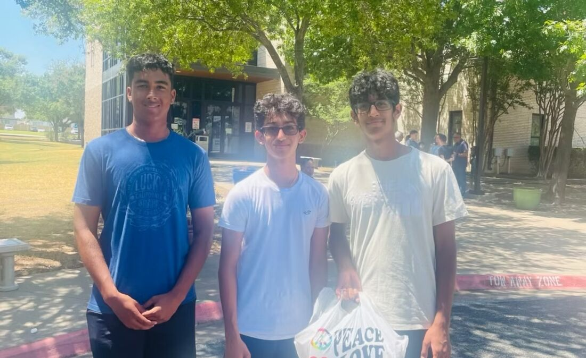
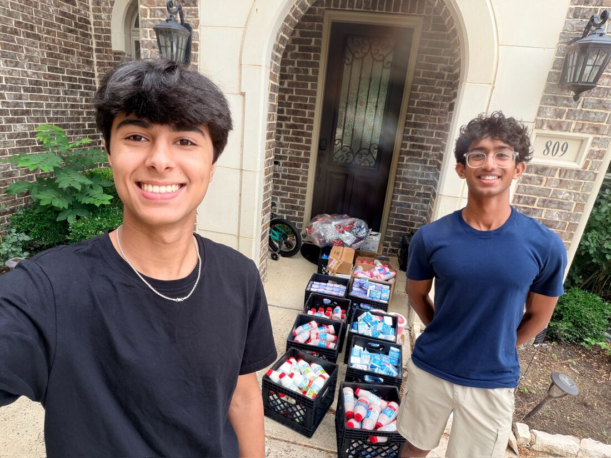
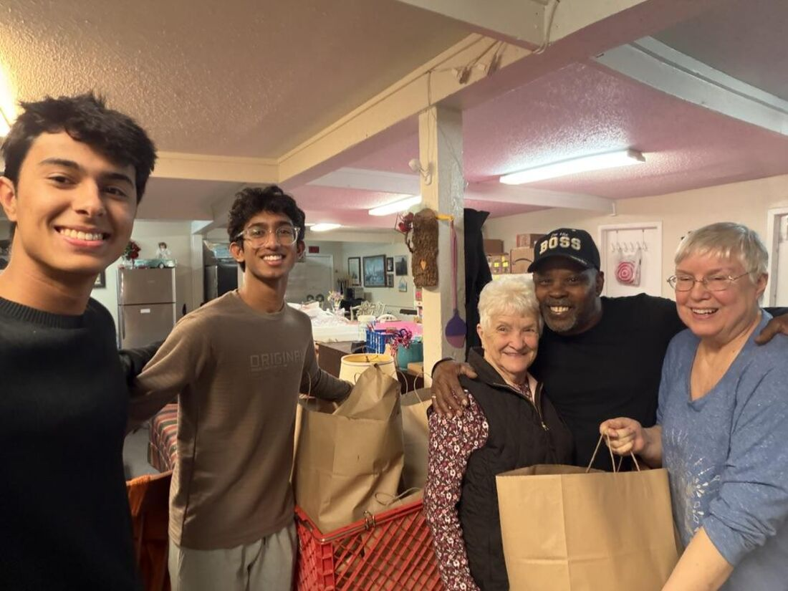
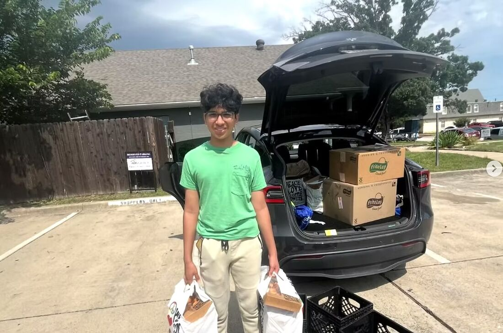
Be part of the next number
Every volunteer shift and every donation moves these numbers forward.
Get Involved